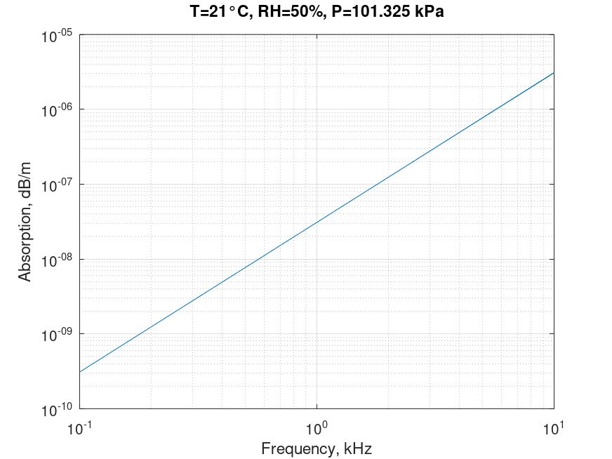

Sound absorption in air. ISO 9613-1 equation
Mathematical definition
$$\boxed{\alpha = {\alpha _{cl}} + {\alpha _{rot}} + {\alpha _{vib,O}} + {\alpha _{vib,N}}}$$
| Notation | Description | Units | Limits | Conversion |
|---|---|---|---|---|
| $\alpha$ | pure-tone sound attenuation coefficient | $\text{dB/m}$ | ||
| $T$ | ambient atmospheric temperature | $^{\circ}\text{C}$ | $-20 < T < +50$ | $T\left[ {\rm{K}} \right] = T\left[ {{\rm{^\circ C}}} \right] + 273.15$ |
| $h_{r}$ | relative humidity | $\text{\%}$ | $10 < h_{r} < 100$ | |
| $p_{a}$ | atmosperica pressure | $\text{kPa}$ | ||
| $f$ | frequency | $\text{kHz}$ | $0.05 < f < 10$ |
$${\alpha _{cr}} = {\alpha _{cl}} + {\alpha _{rot}} = \frac{{1.60 \times {{10}^{ - 10}}{{\left( {T/{T_0}} \right)}^{\frac{1}{2}}}{f^2}}}{{{p_a}/{p_r}}}$$
$${\alpha _{vib,O}} = {\left( {\alpha \lambda } \right)_{max,O}}\left( {f/c} \right)\left( {2\left( {f/{f_{rO}}} \right){{\left( {1 + {{\left( {f/{f_{rO}}} \right)}^2}} \right)}^{ - 1}}} \right)$$
$${\alpha _{vib,N}} = {\left( {\alpha \lambda } \right)_{max ,N}}\left( {f/c} \right)\left( {2\left( {f/{f_{rN}}} \right){{\left( {1 + {{\left( {f/{f_{rN}}} \right)}^2}} \right)}^{ - 1}}} \right)$$
$${\left( {\alpha \lambda } \right)_{max,O}} = \left( {2\pi /35} \right)\left( {10\lg \left( {{e^2}} \right)} \right){X_O}{\left( {{\theta _O}/T} \right)^2}\exp \left( { - {\theta _O}/T} \right)$$
$${\left( {\alpha \lambda } \right)_{max,N}} = \left( {2\pi /35} \right)\left( {10\lg \left( {{e^2}} \right)} \right){X_N}{\left( {{\theta _N}/T} \right)^2}\exp \left( { - {\theta _N}/T} \right)$$
$$c = 343.2{\left( {T/{T_0}} \right)^{\frac{1}{2}}}$$
$${f_{rO}} = \frac{{{p_a}}}{{{p_r}}}\left( {24 + 4.04 \times {{10}^4}h\frac{{0.02 + h}}{{0.391 + h}}} \right)$$
$${f_{rN}} = \frac{{{p_a}}}{{{p_r}}}{\left( {\frac{T}{{{T_0}}}} \right)^{ - \frac{1}{2}}}\left( {9 + 280h\exp \left( { - 4.170\left( {{{\left( {\frac{T}{{{T_0}}}} \right)}^{ - \frac{1}{3}}} - 1} \right)} \right)} \right)$$
$$h = {h_r}\left( {{p_{sat}}/{p_r}} \right)/\left( {{p_a}/{p_r}} \right)$$
$${p_{sat}}/{p_r} = {10^{ - 6.8346\left( {{T_{01}}/T} \right)}} + 4.615$$
| Notation | Description | Units |
|---|---|---|
| $a_{cl}$ | "classical" absorption caused by transport processes | $\text{dB/m}$ |
| $a_{rot}$ | molecular absorption caused by rotational relaxation | $\text{dB/m}$ |
| $a_{vib,O}$ | molecular absorption caused by vibrational relaxation of oxygen | $\text{dB/m}$ |
| $a_{vib,N}$ | molecular absorption caused by vibrational relaxation of nitrogen | $\text{dB/m}$ |
| $\left( {\alpha \lambda } \right)_{max}$ | maximum attenuation caused by vibrational relaxation | $\text{dB}$ |
| $c$ | speef of sound | $\text{m/s}$ |
| $f_{rO}$ | relaxation frequency of oxygen | $\text{Hz}$ |
| $f_{rN}$ | relaxation frequency of nitrogen | $\text{Hz}$ |
| $h$ | molar concentration of water vapour | $\text{\%}$ |
| $p_{sat}$ | saturation vapour pressure | $\text{kPa}$ |
| $p_{a}$ | atmospheric pressure | $\text{kPa}$ |
| $p_{r}$ | reference ambient atmospheric pressure | $\text{kPa}$ |
| Notation | Description | Value | Units |
|---|---|---|---|
| $\Theta_{O}$ | characteristic vibrational temperature for oxygen | $2239.1$ | $\text{K}$ |
| $\Theta_{N}$ | characteristic vibrational temperature for nitrogen | $3352.0$ | $\text{K}$ |
| $X_{O}$ | fractional molar concentration for oxygen | $0.209$ | |
| $X_{N}$ | fractional molar concentration for nitrogen | $0.781$ |
Octave/Matlab implementation
function alpha = sound_absorption_air_iso_annex(T,RH,P,f)
% Inputs
% T: temperature \ degree Celsius \ -20 < T < +50
% RH: relative humidity \ percentage \ 10 < RH < 100
% P: pressure \ kPa
% f: frequency \ kHz \ 0.05 < f < 10
% Outputs
% alpha: absorption of sound in air \ dB/m
Kelvin = 273.15;
T_ref = Kelvin + 20;
T_kel = Kelvin + T;
T_rel = T_kel / T_ref;
T_01 = Kelvin + 0.01;
Tho = 2239.1;
Thn = 3352.0;
P_ref = 101.325;
P_rel = P / P_ref;
Xo = 0.209;
Xn = 0.781;
P_sat_P_ref = 10.^(-6.8346*(T_01./T_kel).^(1.261)+4.6151);
H = RH.*(P_sat_P_ref./P_rel);
Fro = P_rel.*(24+(4.04e4)*H.*(0.02+H)./(0.391+H));
Frn = P_rel.*(T_rel.^(-1/3)).*(9+280*H*exp(-4.170*(T_rel.^(-1/3)-1)));
C = 343.2*(T_rel.^(1/2));
acr = (1.60e-10)*(T_rel.^(1/2)).*(f.^2)./P_rel;
amaxO = (2*pi/35)*(10*log10(exp(1)^2)) ...
*Xo*((Tho./T_kel).^2).*exp(-Tho./T_kel);
avibO = amaxO.*(f/C)*2.*(f./Fro)./(1+(f./Fro).^2);
amaxN = (2*pi/35)*(10*log10(exp(1)^2)) ...
*Xn*((Thn./T_kel).^2).*exp(-Thn./T_kel);
avibN = amaxN.*(f/C)*2.*(f./Frn)./(1+(f./Frn).^2);
alpha = acr + avibO + avibN;
end
Computational examples

References
- ISO 9613-1 : Acoustics-Attenuation of sound during propagation outdoors-Part 1: Calculation of the absorption of sound by the atmosphere, (1993).